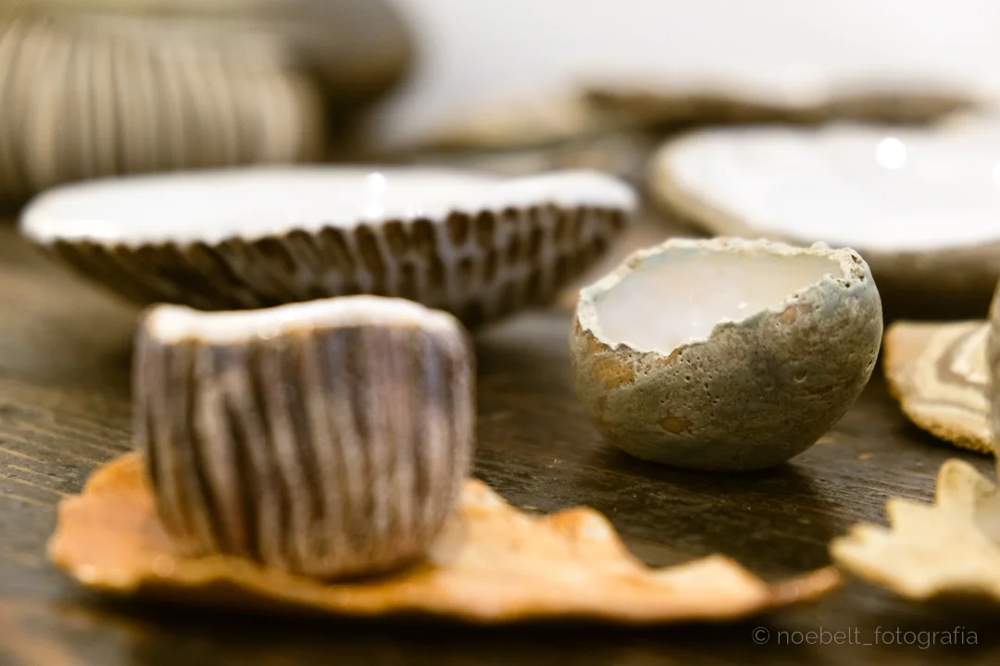

Connecta amb la matèria i aprèn la tècnica mil·lenària de tornejar el fang. Sessions individuals, experiències per a parelles i packs regulars de perfeccionament en torn elèctric.
Treballar al torn de ceràmica és una experiència meditativa, expressiva i apassionant. Assegut davant la roda, aprendràs a sincronitzar el ritme del pedal amb la pressió de les teves mans per donar vida a cilindres, bols, tasses i gerros.
Al nostre taller situat a la Plaça Rector Ferrer d'Olot (La Garrotxa), comptem amb torns elèctrics professionals d'última generació. Treballem en grups molt reduïts perquè el professor pugui acompanyar-te en cada moviment: des de la postura corporal i la col·locació dels colzes fins al tacte sensible de l'aigua i l'argila.
Totes les peces que creïs al taller seran polides, assecades lentament i cuites dues vegades al nostre forn ceràmic. El resultat són objectes resistents, impermeables i 100% aptes per a l'ús diari a la cuina.

El camí pas a pas per dominar el torn de terrissaire des de la primera sessió:
Comencem preparant el fang per eliminar bombolles d'aire mitjançant la tècnica de cap de bou i fixant la bola amb força al centre de la platina giratòria.
El pilar fonamental del torn: mitjançant la pressió ferma de les palmes i els dits aconseguim que el fang giri en perfecte equilibri concèntric.
Obrim el cor del fang per determinar la base i el gruix, i després aixequem les parets amb cura aplicant pressió suau i constant de baix a dalt.
Un cop la peça té duresa de cuir, es perfila la base, s'apliquen els esmalts escollits i es cou a més de 1000 °C per garantir resistència alimentària.
Pots venir a fer un bateig puntual de torn (2h) o adquirir un paquet d'hores per practicar de forma autònoma i guiada.